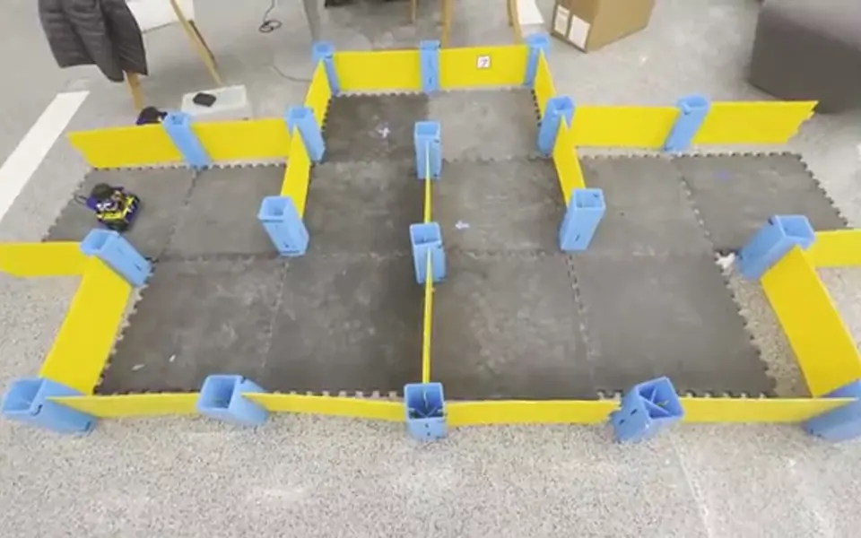
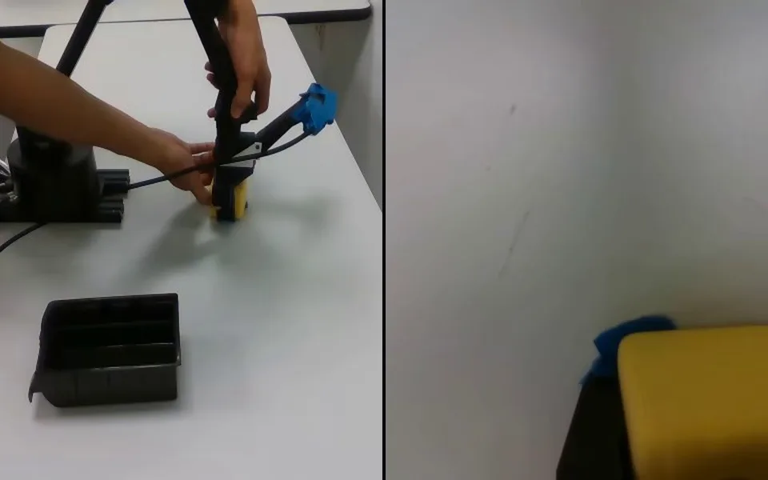
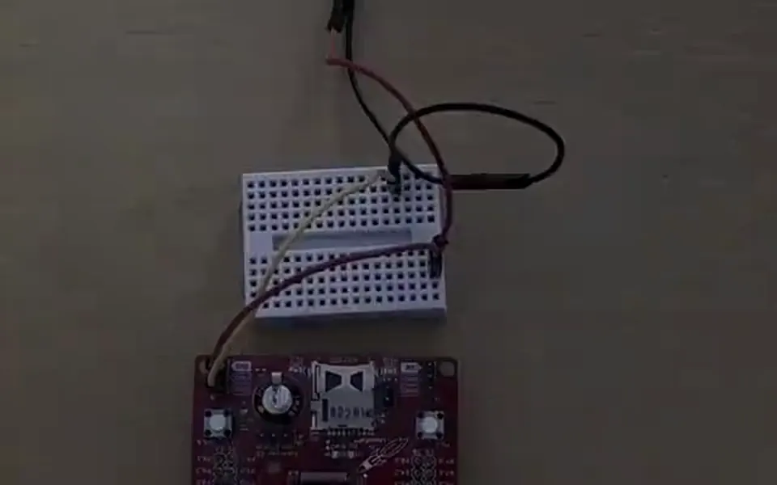
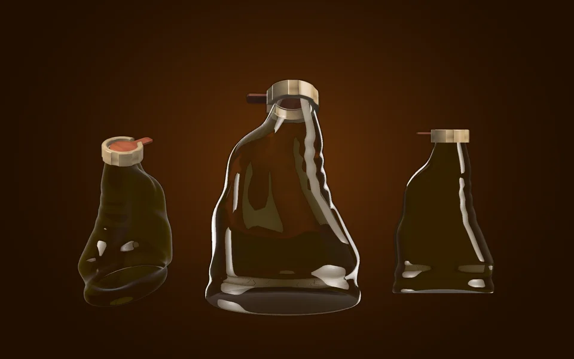

RSS 2027
Under review
Lift One, Know All: What a Robot Can Remember About Objects Shuffled Out of Sight
My part: I built the ManiSkill3 simulation environment, the dataset, the evaluation metrics and the baselines.
CS @ University of Michigan. I build AI that can

I'm a Computer Science student at the University of Michigan, graduating in May 2027. I grew up in Seoul, and I do research in two labs.
In Prof. Jason Corso's COG Lab, I work on surgical video understanding: post-training vision-language models with DPO, Step-DPO and GRPO so they follow the steps of an operation, and benchmarking frontier models on surgical skill assessment.
At the Extreme Robotics (Atombots) Lab, I work on robot learning: imitation-learning datasets and policies, robot arms, and a multi-camera motion-capture system.
My part: I built the ManiSkill3 simulation environment, the dataset, the evaluation metrics and the baselines.
Studies subliminal learning, where fine-tuning on unrelated data quietly transmits a trait or misalignment, finds that trait acquisition spikes in the first 10–20 training steps, and proposes liminal training, an annealed KL regularizer that prevents it.
Hover a card to see it move. Click for the full write-up, videos and reports.

A manipulation policy learned from human RGB-D demonstrations with a RISE-based diffusion policy. No teleoperation, just watching people work.
View project
Motion control, particle-filter SLAM, occupancy-grid mapping and A* planning, built from scratch in C++ with ROS 2.
View project
A 3D walkthrough of one forward pass of a fine-tuned SmolVLA robot policy, with the real numbers at every step: two camera images, through the vision-language model and the action expert, to 5 seconds of joint angles for a Unitree D1 arm.
Open the visualizationA rectified-flow generative model in pure PyTorch: a velocity network learns to carry Gaussian noise to data along straight paths, sampled with Euler and Heun ODE steps.
View on GitHub
A bottle-agnostic water-level tracker: a bone-conduction mic, MFCC features and an SVM on an STM32. No camera, no ultrasonic sensor.

MNIST digit classification running entirely on a microcontroller: 5-bit quantized pixels streamed over UART, per-class scores back in real time.
A ROS 2 + RealSense + AprilTag tracking stack feeding a Go2W quadruped for locomotion and multi-robot swarm experiments.
View project
A 3D-printed spice jar you can open with one hand while cooking. Best Design (1st place) at U-M's Thunderdome Innovation Contest.
View projectLogistic regression on gold, XP and kill differences at 25 minutes, engineered from 10K+ match logs, with Plotly visualizations.
See it under the hoodPython, C++, C, Git, Linux, Docker, Slurm GPU clusters, CUDA
PyTorch, VLMs (Qwen-VL, InternVL), DPO / Step-DPO / GRPO, diffusion models
ROS 2, Gazebo, ManiSkill3, LeRobot, Intel RealSense, AprilTag, imitation learning
SAM 3, video segmentation, pose estimation, Plotly Dash, Grafana, Figma
I'm always glad to hear from researchers, recruiters and curious people, especially about surgical AI, multimodal perception and robot learning.